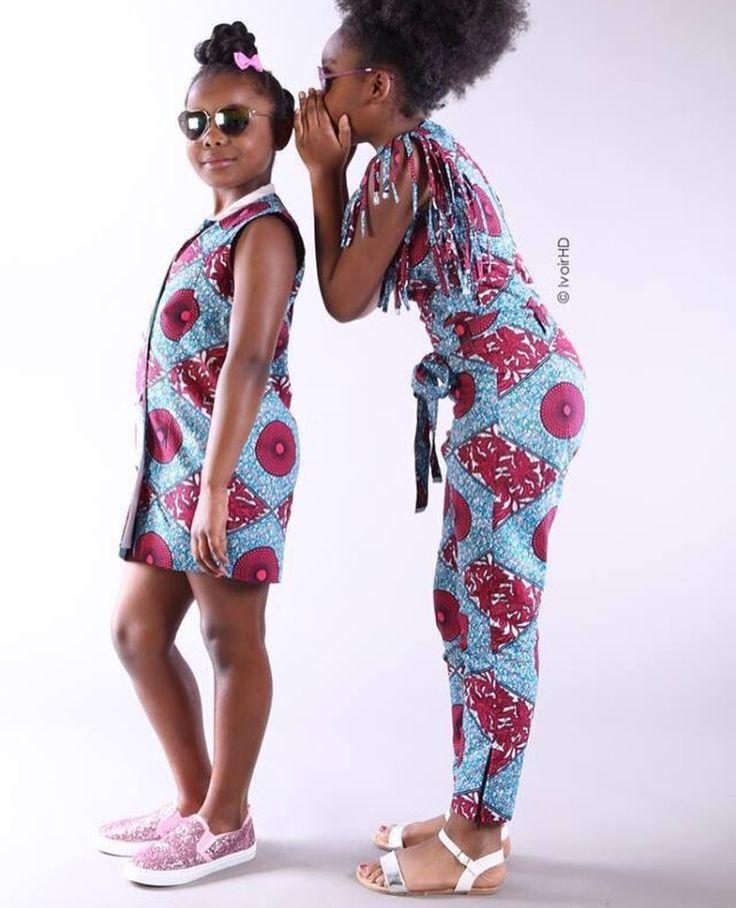

DISEÑO DE MODA
Diseño de modas en definitiva, se trata de elaborar prendas afro colombianas, como para niños, niñas, adolecentes, adultos, etc....
DISEÑO
Nuestra moda es la creatividad con la que nos encargagamos de diseñar y confeccionar prendas indumentarias y accesorios, Para ello se tienen en cuenta las influencias culturales y sociales de un periodo y época específica. La moda no es estática y se nutre de numerosas fuentes de inspiración procedentes, tanto del presente como del pasado. Por lo tanto, esta disciplina no se limita únicamente en crear prendas de ropa. También forma parte de toda una industria que impacta todos los días en la sociedad.